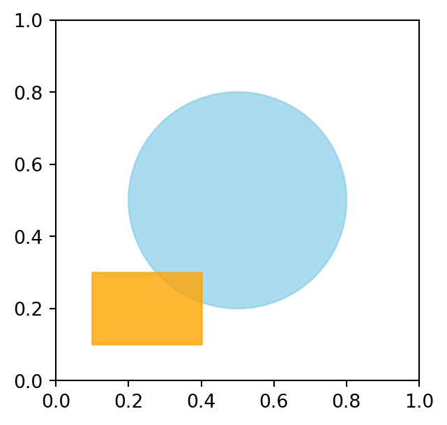

'Mechanical--Engineering--Skills--3'Implementation of OOP in Python
Khiem Nguyen
Lecturer in Multiscale Materials
khiem.nguyen@glasgow.ac.uk
Object-Oriented Programming (OOP) is a programming paradigm that organizes software design around objects, which are instances of classes. These objects encapsulate data (attributes) and behavior (methods), making it easier to model real-world entities in code.
Procedure Programming
| Pros | Cons |
|---|---|
| Simple and easy to learn for small programs | Harder to maintain as codebase grows (spaghettie code risk) |
| Good for tasks that are linear and algorithmic | Poor modelling of real-world entities |
| Lower overhead compared to OOP for small-scale projects | Code reuse is limited; duplication (Copy/Paste) is common |
| Changes in data structures often require changes in many functions |
Object-oriented programming
| Pros | Cons |
|---|---|
| Encapsulation: Keep data and method, improving moduliarty | More complex for beginners |
| Reusuability: Inheritance and polymorphism reduce duplication | Slightly more overhead (memory and design time) |
| Maintainability: Easier to update and extend larger systems | Can lead to over-engineering for simple tasks |
| Real-world modelling: Classes map naturally to entitities |
Key Difference
Procedural: Focuses on functions and procedures acting on data.
OOP: Focuses on objects that encapsulate both data and behavior.
Objects we have used all the time
'Mechanical--Engineering--Skills--3'A lot of Python libraries are written and provided in OOP paradigm.
from sklearn.linear_model import LinearRegression # for linear regression
import numpy as np
model = LinearRegression() # Create a LinearRegression object
# Prepare data for fitting
X = np.array([[1], [2], [3], [4], [5]]) # Features
y = np.array([2, 4, 6, 8, 10]) # Target
# Fit the Linear Regression model to data
model.fit(X, y)
# predict new values
predictions = model.predict(np.array([[1.5], [2.5]]))
print(type(model))
print(type(predictions))
print(predictions)<class 'sklearn.linear_model._base.LinearRegression'>
<class 'numpy.ndarray'>
[3. 5.]matplotlib.patchesimport matplotlib.pyplot as plt
from matplotlib.patches import Circle, Rectangle
fig, ax = plt.subplots(figsize=(3.5, 3.5))
circle = Circle((0.5, 0.5), 0.3, color='skyblue', alpha=0.7)
ax.add_patch(circle)
rect = Rectangle((0.1, 0.1), 0.3, 0.2, color='orange', alpha=0.8)
ax.add_patch(rect)
plt.show()
Last but not least, you will deal with OOP all the time in advanced courses
A Class is defined by the keyword
classfollowed by the name of the class.Note the colon “:” and “indentation”
class Circle: # <---- class name
def __init__(self, center_outside, radius_outside): # constructor
self.center = center_outside # <-- data, local to each object
self.radius = radius_outside # <-- data, local to each object
def draw(self): # <---- method
print("Drawing is done") # plotting is done here.
def show_data(self): # <---- method
print(f"Circle: center={self.center}, radius={self.radius}")class Circle: # <---- class name
def __init__(self, center_outside, radius_outside): # constructor
self.center = center_outside # <-- data, local to each object
self.radius = radius_outside # <-- data, local to each object
def draw(self): # <---- method
print("Drawing is done") # plotting is done here.
def show_data(self): # <---- method
print(f"Circle: center={self.center}, radius={self.radius}")Circle: center=(1, 1), radius=0.5
Drawing is doneWhat has just happened
c = Circle((1, 1), 0.5) is executed, the function __init__() is executed.Circle is created and assigned the variable c.c now exists and represent an object of type Circle.__init__(self, ...) is the constructor for the class Circle.
How to use it
value_outside is just a variable name.value is another data associated with the object “self”.value_outside cannot be confused with self.value even if its name is changed to value.Thus, Python perfectly permits
This is the recommended way of writing a constructor.
__init__() for the class Circle using the recommended practice?A simple interpretation of say_hello()
self variableCreate an object
- During the process of defining the class
Student, we cannot create an object and assign it to any variable. We cannot writekhiem.IDandkhiem.reveal_ID().
self variableNote
- If
selfis a variable in a function definition, we can actually make use of it in the sytntaxStudent.reveal_ID(object).- In fact,
__init__(self, ID)is just a function too.
self variableQuestions
self variableQuestions:
Solutions:
self variable(1, 2, 3) {'one': 1, 'two': 2, 'three': 3}both args and kwargs can take different variables.
self variableself is just the first argument in functions declared in a class. It can take different names.By convention, always use
selfplease
Of course, some object of complicated concept needs multiple inputs to be created.
print(a), print(b) and print(c) give us?We write a method to present the complex number itself.
We can write doc strings for class and its methods (functions).
class Car():
"""Model a Car."""
def __init__(self, make, model):
"""
The constructor receives the producer and model of the car.
"""
self.make = make
self.model = model
self.tank_cap = 60 # 60 liter tank
self.tank = 0 # initial fuel tank is empty
def fill_up(self):
"""Fill the tank to full."""
self.tank = self.tank_cap
print("Fill up done: Full!")class Car:
number_of_cars = 0
def __init__(self, make, model):
""" Constructor receives producer and model of the car"""
Car.number_of_cars += 1
self.make = make
self.model = model
self.tank_cap = 60
self.tank = 0
def fill_up(self):
self.tank = self.tank_cap
@classmethod
def how_many(cls):
# 'self' for "object". By convention, we use 'cls' for "class".
print(f"Number of cars = {cls.number_of_cars}")print(f"Number of cars (using class variable) = {Car.number_of_cars}")
my_car = Car("Nissan", "Micra")
print(f"Number of cars = {Car.number_of_cars}")
your_car = Car("Mercedes", "A160")
print(f"Number of cars = {Car.number_of_cars}")
his_car = Car("Mercedes", "A140")
print(f"Number of cars = {Car.number_of_cars}")
# Finally, we can also ask
print("Finally, we can also ask: ", end="")
Car.how_many()Number of cars (using class variable) = 0
Number of cars = 1
Number of cars = 2
Number of cars = 3
Finally, we can also ask: Number of cars = 3Composition
Example: Every Student has an ID (number), email (string), courses & grades (Table)
Inheritance
Example
We shall focus on inheritance.